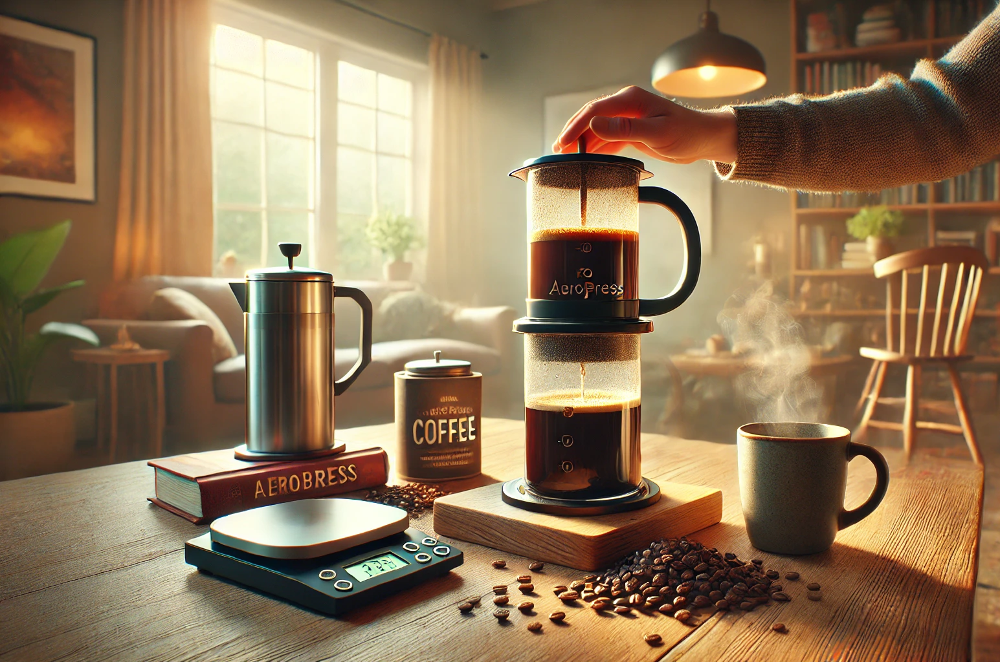

Se conoce como "inmersion" al metodo de peparacion que consiste en exponer los granos de café al agua durante un período de tiempo prolongado debido al tamaño de su molido. Al molerse en particulas de tamaño grueso, similar a la sal gruesa, se necesita mas tiempo para que el agua absorba los componentes necesarios para su correcta extracción. Veamos algunos ejemplos.
Espresso
La cafetera espresso, cuyo origen se remonta a finales del siglo XIX en Italia, revolucionó la forma de preparar café. Su invención se atribuye a Angelo Moriondo, quien patentó la primera máquina en 1884, aunque fue Luigi Bezzera quien, a principios del siglo XX, perfeccionó el diseño y sentó las bases para las máquinas modernas. Este tipo de cafetera se caracteriza por utilizar presión (generalmente 9 bares) para forzar agua caliente a través de café molido fino, extrayendo así un café concentrado y aromático. El resultado en taza es un espresso: una bebida de pequeño volumen (aproximadamente 30 ml), con una crema densa y persistente, un cuerpo intenso y sabores complejos. Las cualidades del espresso incluyen su rapidez de preparación, la intensidad de su sabor y la versatilidad para ser la base de otras bebidas como capuchinos y lattes.
Aeropress
La AeroPress, inventada en 2005 por Alan Adler, se distingue por su diseño innovador y versatilidad. A diferencia de las cafeteras tradicionales, la AeroPress utiliza un sistema hibrido comenzando con la inmersión y luego con una presión manual (oscila alrededor de 0.4 a 0.7 bares) para extraer el café. Consiste en dos cilindros concéntricos: uno donde se mezcla el café molido con agua caliente y otro que actúa como émbolo. Al presionar el émbolo, el agua pasa a través del café y un filtro de papel, resultando en una bebida limpia y con sabores definidos. Este método permite controlar variables como el tiempo de infusión, la temperatura del agua y la presión, lo que ofrece un amplio rango de experimentación para obtener diferentes perfiles de sabor. La AeroPress es conocida por producir un café con cuerpo suave y baja acidez, resaltando las notas sutiles del grano. Su facilidad de uso y limpieza, junto con su portabilidad, la han convertido en una opción popular entre los amantes del café que buscan una experiencia personalizada y de alta calidad.